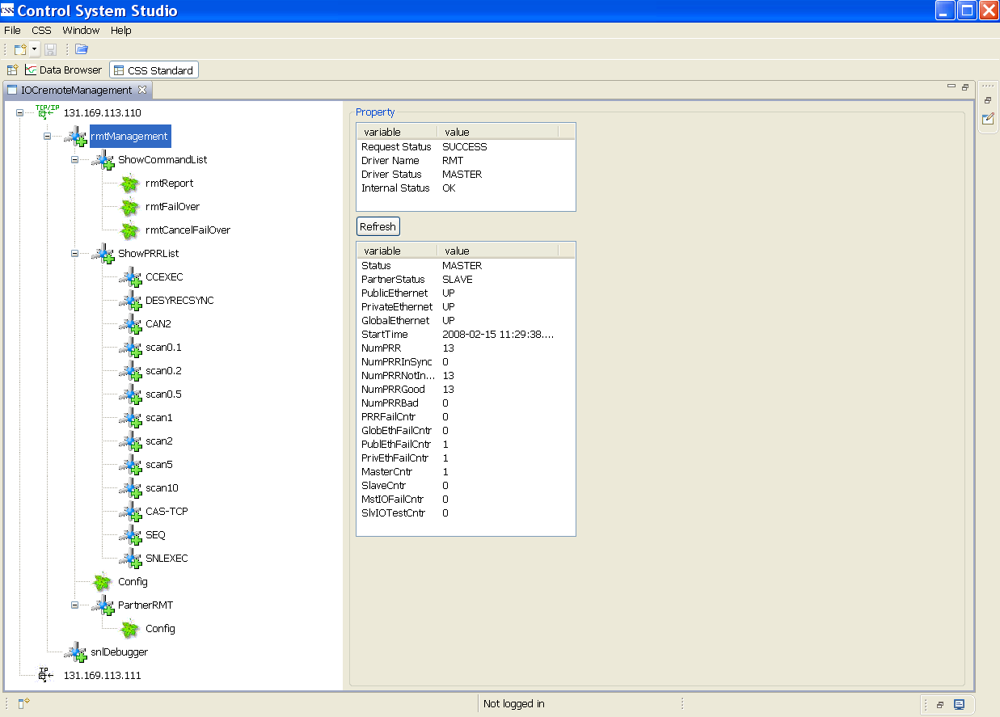
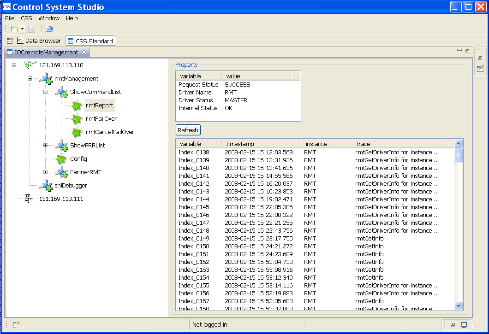
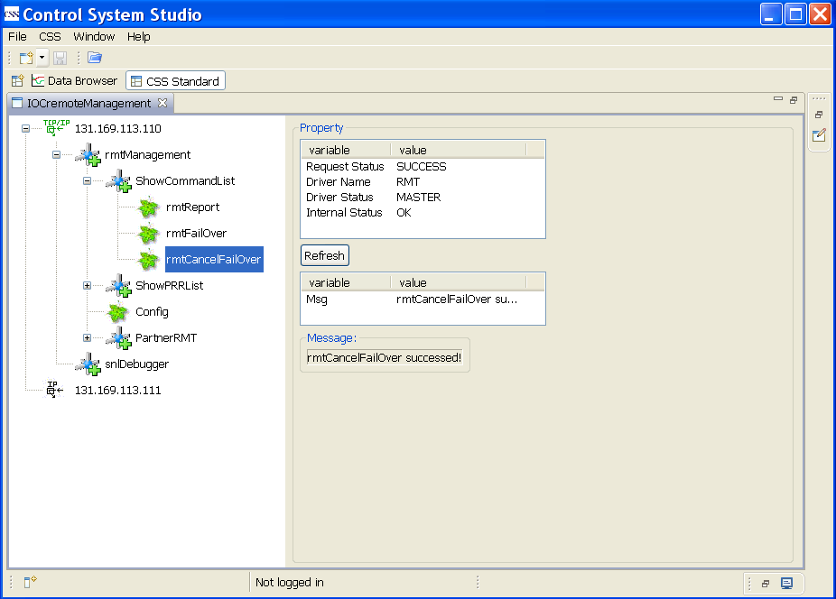
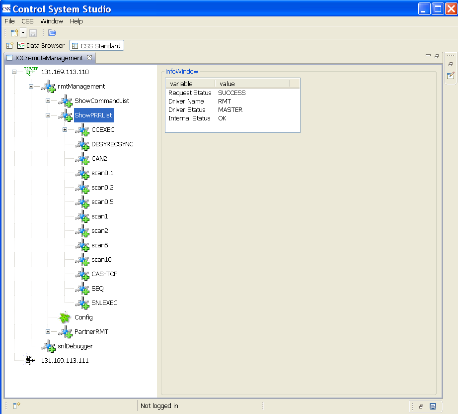

RMT-Management ist ein Werkzeug, mit dem die Redundancy Monitor Task (RMT) verwaltet werden kann.
Es kann allgemeine Info über RMT, z.B. den RMT-State (Master oder Slave), den Ethernet-Verbindungsstats,
die Anzahl von Primary Redundancy Resources (PRR) u.s.w. darstellen.
Es kann auch Konfigurations-Info und Info über seine Partner zeigen.
Einige RMT-Kommandos können aus dem RMT-Management gestartet werden.
Die PRR-Liste und detaillierte Info über jeden PRR kann angezeigt werden.
Das folgende Bild stellt das CSS-Interface zum RMT-Management dar.
Der linke Bereich ist eine Baumstruktur und der rechte Bereich zeigt die Details für die ausgewählten Knoten.
Einige allgemeine Infos stehen oben im rechten Bereich.

RMT Management ist ein Teil des IOCremoteManagement. IOCremoteManagement kann aus dem CSS-Menu gestartet werden:
CSS->Diagnostic Tools->IOCremoteManagement. Zuerst wird links (vom Interface???) eine Liste von IOC-IP-Adressen gezeigt.
IP-Adressen sind konfigurierbar. Die im folgenden Bild gezeigten zwei IP-Adressen bilden ein redundantes IOC-Paar.
Nach dem Anklicken einer IP-Adresse werden zwei Zweige gezeigt: rmtManagement und snlDebugger.
rmtManagement steht für RMT Management; snlDebugger steht für SNL Debugger, wird hier nicht beschrieben.
Nach dem Anklicken von rmtManagement verden drei Unterzweige und ein Blatt dargestellt :
ShowCommandList, ShowPRRList, Config, and PartnerRMT.
Jeder Unterzweig hat seinen eigenen Unterzweig oder sein eigenes Blatt.
ShowCommandList ist eine RMT-Kommandosammlung.
ShowPRRList dient zum Auflisten aller registrierten PRRs.
Config dient zum Anzeigen der Konfigurations-Info.
PartnerRMT zeigt Info, related to its partner (???) .
Es gibt drei RMT-Kommandos: rmtReport, rmtFailOver and rmtCancelFailOver.
rmtReport dient zum Report der gesendeten RMT Aktivitäten.

rmtFailOver dient zum Umschalten des RMT-State. Die Vorbedingungen sind, dadd der IOC MASTER ist
und dass die private Ethernet-Verbindung OK ist.
Nach Eingabe der "exectime" muss der Knopf "call it" gedrückt werden.
Wenn "exectime" null ist, wird rmtFailOver sofort ausgeführt.
rmtCancelFailOver dient zum Canceln von rmtFailOver.

Alle registrierten PRRs verden aufgelistet. Im folgenden Bild gibt es 13 PRRs.
Ein Name mit dem Präfix "scan" : scantask (???).
"CAS-TCP" : Channel Access server.
"SEQ" : sequence.
"CCEXEC" : Continuous Control Exective (CCE).
"SNLEXEC" : SNL Executive. Diese 11 PRRs sind normalerweise für ein redundantes IOC-System erforderlich.
DESYRECSYNC : ein besonderes PRR zum synchronisieren der internen Daten von (bei DESY entwickelten) diglog-Records.
CAN2 : Ein Feldbus-Treiber.

Nach anklicken des PRR-Namens wird rechts allgemeine Info und ein Unterzweig "MoreInfo" ausgegeben.